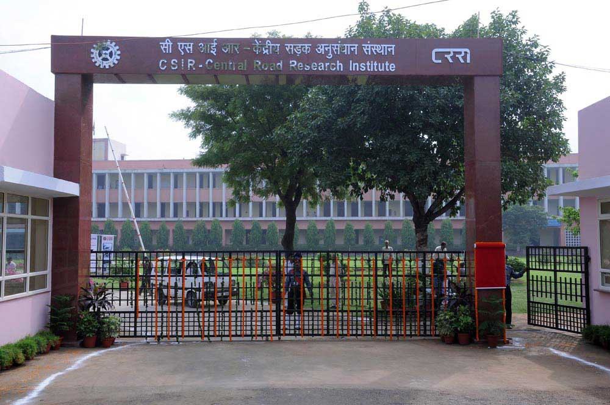

"JavaScript is a standard programming language that is included to provide interactive features, Kindly enable Javascript in your browser. For details visit help page"
Employee corner
Screen reader access
A
+
A
A
-
A
A
Search form
Search
CSIR
Google
हिन्दी
CSIR Old Website
वैज्ञानिक तथा औद्योगिक अनुसंधान परिषद
Council of Scientific & Industrial Research
(विज्ञान एवं प्रौद्योगिकी मंत्रालय, भारत सरकार)
Ministry of Science & Technology, Govt. of India
Menu
About Us
About CSIR
Vision and Mission
Profile
CSIR Network Map
Organization Structure
Organization Structure
Organization Structure (Archive)
CSIR Leader
CSIR Theme Directorates
Directory
Annual Reports
CSIR Annual Accounts
FAQ
Former Director Generals
Brochure (Archival)
Sports Promotion Board
R &D Activities & Output
Events
Achievements
Csir Pride
Rural Technology
Technologies For Rural Sector
Selected CSIR Technologies Focusing States of India
CSIR Milestones
Honours And Awards
Honours And Awards
CSIR Technology Awards (CTA)
CSIR Award for S&T Innovations for Rural Development (CAIRD)
CSIR Diamond Jubilee Technology Award (CDJTA)
CSIR achievement
Knowledge Resource Center
About KRC
E-Resources
CSIR Repositories
OPAC (Online Public Access Catalogue)
Virtual Tour
Collaborations
MOUs Signed
NMITLI
CSIR in Media
CSIR Labs
Gallery
Audio
Photo Gallery
Video Gallery
Home
❯
Gallery
❯
Central Road Research Institute (CRRI), New Delhi
Central Road Research Institute (CRRI), New Delhi
Grid
List
Swipe to view
Central Road Research Institute (CRRI), New Delhi
Central Road Research Institute (CRRI), New Delhi
Previous
Next
Play

Central Road Research Institute (CRRI), New Delhi3
Image 3 of 3


.png)

{kind=link}
{kind=link}
.JPG){kind=link}